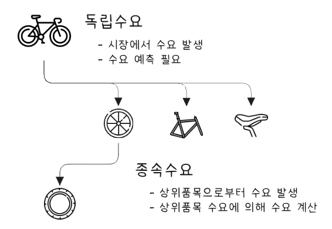
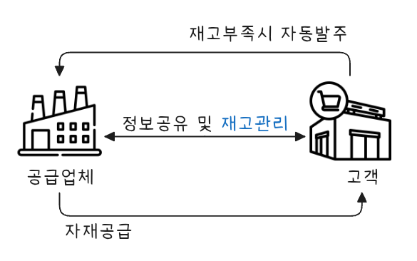

flowchart TB 자재관리 --- 1[구매관리] & 재고관리 1 --- 구매관리 & 외주관리 & 협력사관리 재고관리 --- 소요관리 & 저장관리 & 분배관리 style 재고관리 fill:#EEF
재고관리
재고관리
재고란 조직에서 판매를 목적으로 보관중인 물품이나 자원으로, 많이 보유하면 빠르게 시장에 대응할 수 있고 재고주문비용이나 생산준비비용이 절감되지만, 재고 저장 비용이나 이자비용, 기회비용이 증가하는 문제점이 발생한다.
재고관리 개요
재고관리는 기업에서 재고 수준을 어떻게 유지할 것인지, 언제 보충할 것인지(주문시점/생산시점), 주문량을 얼마로 할 것인지(1회 주문량/생산량) 등을 결정하여 관련 비용을 최소화하면서 고객 서비스 수준을 향상시키는 활동이다.
재고 기능
재고는 생산과 소비 사이에서 균형을 맞추는 중요한 역할을 한다. 주요 기능은 다음과 같다.
- 재고의 기능
-
- 수요와 공급의 불일치 완화
- 생산 속도와 고객 수요가 일치하지 않을 경우, 재고는 이를 조율하는 역할을 한다.
- 예) 계절별 수요 변동에 대비해 상품을 미리 생산해두는 경우.
- 생산의 안정성 확보
- 생산 라인의 중단 없이 지속적인 생산이 가능하도록 원자재 및 부품을 비축한다.
- 예) 원재료 공급에 차질이 생겨도 재고가 있다면 생산이 계속된다.
- 긴급 주문 대응
- 고객의 긴급 주문이나 갑작스러운 수요 증가에 대비해 빠르게 대응할 수 있다.
- 가격 변동 완충
- 원자재 가격 상승에 대비해 미리 대량 구매하여 가격 변동에 대한 리스크를 줄인다.
- 운송 및 조달 효율화
- 대량으로 생산 및 조달하여 운송 비용을 절감하고, 수시로 재고를 채우는 부담을 줄인다.
- 수요와 공급의 불일치 완화
재고 삭감 효과
재고 삭감은 비용 절감 및 경영 효율성 향상에 기여한다. 주요 효과는 다음과 같다.
- 재고 삭감 효과
-
- 비용 절감
- 보관 비용: 창고 임대료, 유지 관리 비용이 감소한다.
- 자본 비용: 불필요한 자금이 재고로 묶이지 않아, 자금을 유동적으로 활용할 수 있다.
- 손실 비용: 유통기한이 지나거나, 부품이 구형이 되어 발생하는 폐기 비용이 줄어든다.
- 보관 비용: 창고 임대료, 유지 관리 비용이 감소한다.
- 리드타임 단축
- 재고 삭감으로 생산 및 조달 리드타임이 짧아져, 빠른 납기와 생산 유연성이 확보된다.
- 재고 삭감으로 생산 및 조달 리드타임이 짧아져, 빠른 납기와 생산 유연성이 확보된다.
- 공간 효율화
- 불필요한 재고를 줄이면 창고 및 생산 현장의 공간 활용도가 높아진다.
- 불필요한 재고를 줄이면 창고 및 생산 현장의 공간 활용도가 높아진다.
- 품질 향상
- 재고가 적을수록 신속한 품질 관리 및 문제 발생 시 즉각적인 대응이 가능해진다.
- 재고가 적을수록 신속한 품질 관리 및 문제 발생 시 즉각적인 대응이 가능해진다.
- 경쟁력 강화
- 낭비를 최소화하고 생산성을 극대화하여 시장 변화에 민첩하게 대응할 수 있다.
- 비용 절감
재고는 생산과 소비를 조율하는 필수 요소지만, 과도한 재고는 비용 부담으로 작용한다. 도요타 생산 시스템에서 강조하는 JIT 생산은 필요한 시점에 필요한 만큼만 생산하여 재고 삭감을 통한 경영 효율화를 실현하는 대표적인 사례다.
재고 종류
flowchart TB 00["재고 종류"] 10["안전재고"] 20["예상재고"] 30["수송재고"] 40["주기재고"] 00 --- 10 & 20 & 30 & 40
재고는 사용 목적에 따라 다음과 같이 분류된다.
- 안전재고(Safety Inventory)
-
- 완충재고라고도 하며, 고객 서비스 차질과 부품 부족으로 인한 기회비용을 예방하기 위하여 비축하는 재고
- 제품수요, 리드타임, 부품공급 등 불확실성에 대처하기 위한 것
- 수요예측을 개선하며, 구매 또는 생산할 품목 리드타임을 줄여서 그 기간 동안 수요 불확실성을 감소
- 공급 불확실성 감소
- 생산계획을 부품납품업체들에게 알려 주면 예측이 정확해져 공급 신뢰도 향상
- 예상재고(Anticipation stock)
-
- 계절재고라고도 하며, 사업상 직면하게 되는 불규칙한 수요와 공급에 대응하기 위한 재고
- 수요 절정기에 생산수준을 많이 높이지 않기 위하여 수요가 적은 기간 동안 재고를 비축하거나 부품 납품 업체가 파업이나 생산능력 제한 때문에 위협을 받을 경우 비축한 재고
- 수요율과 산출률을 일치시키는 것, 그러나 수요 변동이 심하면 생산을 조절하기 어려우므로 수요를 평준화 하는 것이 바람직
- 수요 평준화 방안으로, 비수기에 가격을 인하하고 비수기에 판매 촉진을 강화하며, 기존 제품과 수요 사이클이 정반대가 되는 신제품을 제품 라인에 추가하는 방법
- 수송재고
-
- 물품 대금은 지급하였으나 아직 입고되지 않은 상태, 즉 수송 중인 상태인 재고
- 주기재고(Cycle Inventory)
-
- 연간 주문횟수를 줄여서 비용을 절감하려면 일회 주문량이 늘어나는데, 이로 인해 발생하는 재고
- 주문을 얼마나 자주 하고 한 번에 얼마나 할 것인가를 결정하는 것을 크기 결정이라 함
- 외주 또는 생산 로트 사이즈(발주량 Q)를 줄이면 주기재고를 줄일 수 있다. 로트사이즈를 소형화하면 그에 반비례하여 발주(작업준비) 횟수가 많아지므로 발주비(작업준비비)가 증대함
- 소로트화를 위해서는 먼저 발주(작업준비) 과정을 개선하여 발주와 작업준비에 소비되는 시간과 비용을 최소화해야 함
재고 비용
flowchart TB 00["재고 비용"] 10["재고유지비"] 20["재고주문비"] 30["생산준비비"] 40["재고부족비"] 00 --- 10 & 20 & 30 & 40
재고 보유 시 다음과 같은 관련 비용이 발생한다.
- 재고유지비(inventory holding cost)
-
- 재고를 보유함으로써 발생하는 비용으로, 자본비용, 저장비, 냉동비 등이 해당
- 재고주문비(ordering cost)
-
- 재고 보충이나 신규로 주문할 때 소요되는 비용으로, 재고입고 비용, 검사 비용 등이 해당(고정비 성격)
- 생산준비비(set-Up or production change cost)
-
- 재고를 자체적으로 제작할 경우 제조하기 위해 생산 라인을 준비하는데 소요되는 비용으로, 설비 및 장치 변경 비용, 유휴시간 비용 등이 해당(고정비 성격)
- 재고부족비(inventory shortage cost)
-
- 재고가 부족하여 고객 주문에 대응하지 못할 때 발생하는 비용으로, 품절비용(stockout cost, 기회비용), 추후납품비용(제품인도 지연에 따른 벌과금, 생산독촉비용, 신용 상신, 신뢰도 하락 등)이 해당(주관적 평가)
재고 수준 적정성 평가
재고 수준 적정성 평가, 즉 성과 척도 방법은 다음과 같다.
- 평균총재고가치
-
- 보유하고 있는 모든 재고 단가와 수량을 곱하여 재고 가치를 합한 것으로, 시계열 분석이나 경쟁사 대비 분석을 사용
- 공급일수/공급주수
-
- 현재 보유하고 있는 재고가 언제 매출이 되는지 계산한 값으로 재고재산 회전일수/회전주수(기업이 보유한 평균 재고량과 판매수준 비율)
\[공급일수 = \frac{평균총재고}{\text{연간 매출 원가 (또는 연간 매출액)}} \times 기간 \tag{10.1}\]
- 재고자산회전율
-
- 매출원가를 평균재고자산으로 나눈 것으로 재고잔산 회전속도 의미 \[재고회전율 = \frac{매출비용}{평균재고 \times 단위당 원가} \tag{10.2}\]
- 서비스 수준(%)
-
- 고객수요를 충족시키는 목적이 엉ㄹ마나 잘 달성되었는지를 측정하는 척도
보다 자세한 내용은 재고 비용 및 재고 성과 척도를 참고한다.
수요 종류

수요는 크게 독립수요와 종속수요로 구분된다.
- 독립수요 (Independent demand)
-
- 완제품이나 예비부품/서비스부품에 대한 수요와 같이 다른 품목 수요에 의존하지 않고 기업 외부 시장 조건에 따라 결정되는 수요 형태
- 시계열 패턴을 가지고 지속적으로 발생, 수요 예측 필요
- 재고관리에 있어 보충(replenishment) 개념이 사용되고, 재고가 줄게 되면 수요 대비를 위해 재고를 보충
- 종속수요 (Dependent demand)
-
- 최종제품 생산에 소요되는 각종 원자재, 부분품, 구성품 등과 같이 모품목 수요에 따라 종속되어 있는 품목 수요 형태
- 독립수요품목 생산계획에 따라 결정
- 자전거(독립수요) 생산 시, 핸들, 프레임, 바퀴, 타이어 등이 종속수요가 됨
- 재고관리에 있어 소요(requirement) 개념이 사용되고 원자재나 부분품이 쓰이는 상위단계 품목 또는 최종품목 필요에 따라 주문
- 종속수요품목 재고 관리 시스템, MRP 시스템
재고관리 모형
재고관리 모형은 수용 특성에 따라 확정적 재고관리 모형과 확률적 재고관리 모형으로 나눌 수 있다. 또한 특수한 경우 사용할 수 있는 단일기간 재고관리 모형이나 ABC 재고관리 모형도 있다.
flowchart LR 0[재고모형] 11[확정적 모형] 12[확률적 모형] 13[기타 재고 모형] 21[고정주문량 모형] 22[고정주문기간 모형] 23[조건부 재고 보충 시스템] 24[단일기간 재고관리 모형] 25[ABC 모형] 26["투빈시스템<br>원빈시스템<br>기본 재고 시스템"] 31[EOQ 모형] 32[EPQ 모형] subgraph s4[특수한 경우] 23 24 25 26 end subgraph s1[수요 및 조달 기간 특성] 11 12 13 end subgraph s2[주문시기 및 주문량 결정 방법] 21 22 end subgraph s3[고정주문량] 31 32 end 0 --> 11 & 12 & 13 11 & 12 --> 21 & 22 13 --> 23 & 24 & 25 & 26 21 --> 31 & 32
확정적 재고관리 모형
확정적 재고관리 모형은 재고관련 비용, 수요율, 생산율이 확정적인 경우에 사용하는 관리 모형이다.
- 특징
-
- 재고관련 비용, 수요율, 생산율이 확정적
- 가정
-
- 수요는 미리 알려져 있고, 일정하며, 균일하게 발생한다.
- 조달기간은 알려져 있고 일정하다.
- 제품 구입단가는 일정하다.
- 주문비용 또는 준비비용은 고정비로서 일정하다.
- 주문량은 조달기간이 지나면 일시에 전량이 한번에 들어온다.
- 모든 수요는 재고부족 없이 충족된다.
- 주요 용어 설명
-
기호 및 설명
기호 설명 TC 연간 재고관련 총 비용 D 연간 수요량 Q 1회 주문량 EOQ 또는 Q* 경제적 주문량 (최적 주문량) C 단위당 구입가격(생산인 경우 생산 비용) S 1회 주문비용 또는 준비비용 H 연간 단위당 재고유지비용, 1단위를 1년간 재고로 유지하는데 소요되는 비용, 보통 단위당 구입가격의 몇 %로 산정, H = C × 몇 % d 일일 평균 수요 L 조달 기간 R 재주문점 N* 연간 최적 주문 횟수 T* 연간 최적 주문 주기 P 연간 생산율
경제적 주문량 모형(EOQ)

주문량에 따른 특징은 다음과 같다.
| 주문량이 적을 경우 | 주문량이 많을 경우 |
|---|---|
| 평균재고 감소 | 평균재고 증가 |
| 재고 유지비용 감소 | 재고 유지비용 증가 |
| 연간 주문횟수 증가 | 연간 주문 횟수 감소 |
| 연간 주문비용 증가 | 연간 주문비용 감소 |
이상적인 주문량, 즉 최적주문량은 주문비용과 재고유지비용이 적정한 수준에서 결정된 수량이다.
경제적 주문량(EOQ,economic order quantity) 모형이란 가장 단순한 형태를 갖는 재고 모형으로 연간 재고유지비용과 연간 주문비용의 합을 최소화하는 1회 주문량(EOQ 또는 Q*)을 구하는 것으로 이 때 주문량 크기를 경제적 로트 사이즈(ELS, economic lot size)라고도 한다.

| 항목 | 계산식 |
|---|---|
| 연간 재고관련 총 비용 TC (연간 주문비용 + 연간 재고 유지비용) |
\[ \frac{D}{Q}S + \frac{Q}{2}H = \sqrt{2DSH} \tag{10.3}\] |
| 경제적 주문량(Q*) | \[ \sqrt\frac{2DS}{H} \tag{10.4}\] |
| 일일평균수요(d) | \[ \frac{D}{연간영업일수} \tag{10.5}\] |
| 재주문점(R) | \[ dL \tag{10.6}\] |
| 연간 최적주문횟수(N*) | \[ \frac{D}{Q^*} = \sqrt{\frac{DH}{2S}} \tag{10.7}\] |
| 연간 최적주문주기(T*) | \[ \frac{1}{N^*} = \sqrt{\frac{2S}{DH}} \tag{10.8}\] |
- 모형이 성립하기 위한 전제조건
-
- 수요가 일정하고 예측 가능하다.
- 수요는 일정한 속도로 지속적으로 발생하며, 예측 가능한 형태로 변화한다.
- 주문 시 비용은 일정하다.
- 각 주문에 대해 발생하는 고정적인 비용이 존재하며, 주문당 비용은 일정하다.
- 재고 유지 비용이 일정하다.
- 재고를 보유하는 동안 발생하는 비용(저장비용 등)은 일정하며, 보유 재고의 양에 비례한다.
- 주문 리드 타임이 일정하다.
주문을 하고 실제로 물품이 도착하는데 걸리는 시간이 일정하다. - 주문은 한 번에 이루어진다.
- 주문은 한 번에 이루어지며, 연속적인 소규모 주문이 아니라 한 번의 주문으로 전체 수요를 충족시킬 수 있다.
- 재고가 소진되기 전에 항상 새로운 주문이 이루어진다.
- 주문이 이루어질 때 재고가 충분히 남아 있도록 계획되며, 재고가 부족하지 않게 주문이 이루어진다.
경제적 생산량 모형(EPQ)
경제적 생산량(EPQ, economic production quantity) 모형이란 생산이 진행되는 동안 생산된 제품이 재고에 더해짐과 동시에 소비가 일어나서 재고가 감소하는 경우 최적 1회 생산량을 결정하는 모형이다. 자체 생산, 조달하는 물품의 총 재고비용이 최소가 되는 1회당 경제적 생산량으로 기본 EOQ와 유사하지만 주문비용 대신 작업 준비 비용을 대체하여 사용하다는 점이 다르다.

- EPQ 모델 가정
- - 생산이 시작되고 뒤이어 수요가 이루어지며 수요량은 생산량보다 작다. - 생산은 일정 기간 동안 점진적으로 쌓이고 어느 정도 재고 수준에 이르면 생산을 중단한다. - 생산이 중단되면 쌓였던 재고량은 일정량씩 소요되어 바닥 난다. - 재고가모두 없어지면 즉시 생산 작업이 되풀이 된다. - 재고 유지비는 생산량 크기에 정비례하여 발생한다. - 생산단가는 생산량 크리와 관계없이 일정하다.
| 항목 | 계산식 |
|---|---|
| 생산기간(t) | \[\frac{Q}{P} \tag{10.9}\] |
| 평균재고수준 | \[\frac{(P-D)Q}{2P} \tag{10.10}\] |
| 연간재고유지비용 | \[\frac{(P-D)QH}{2P} = \frac{DS}{Q} \tag{10.11}\] |
| 연간생산준비비용 | \[\frac{D}{Q}S \tag{10.12}\] |
| 연간총비용(TC) | \[\frac{DS}{Q} + \frac{(P-D)QH}{2P} \tag{10.13}\] |
| 경제적 생산량(EPQ) | \[\sqrt{\frac{2DS}{H}(\frac{P}{P-D})} \tag{10.14}\] |
확률적 재고관리 모형
확정적 재고관리 모형과 확률적 재고관리 모형은 재고 관리를 위한 두 가지 주요 접근 방식이다. 이 두 모형은 재고 수준을 관리하고 최적화하는 데 필요한 수요 예측 방식에서 차이가 있다.
- 확정적 재고관리 모형 (Deterministic Inventory Model)
-
- 확정적 재고 모형은 수요가 일정하고 예측 가능한 경우에 사용하는 모형
- 수요와 리드 타임이 일정하고 변동이 없다고 가정
- 미래의 수요를 정확하게 예측할 수 있으며 예측된 수요에 따라 재고를 관리
- 주요 특징
-
- 수요가 일정하다.
수요가 고정되어 있어 예측이 정확하고, 이를 바탕으로 재고를 최적화한다. - 리드 타임이 일정하다.
재고 보충을 위한 시간도 일정하므로 공급망에 변동성이 없다. - 재고 수준이 미리 계획된다.
예측된 수요에 맞춰 재고를 정확하게 조절한다.
- 수요가 일정하다.
- 주요 모형
-
- EOQ (Economic Order Quantity, 경제적 주문량 모형)
- EOQ 모형은 재고를 최적화하기 위해 주문량과 주문주기를 결정하는 수학적 모델
- 수요가 일정하고, 주문비용과 보관비용을 고려하여 최적의 주문량을 계산
- EOQ (Economic Order Quantity, 경제적 주문량 모형)
소매업체가 일정한 수요를 가진 제품을 판매한다고 가정했을 때, 매일 100개씩 판매되는 제품에 대해 일정량의 주문을 내고, 매번 동일한 양의 제품을 주문한다고 할 수 있다. 이 경우 수요가 일정하므로, EOQ 모형을 사용하여 최적의 주문량을 계산하고, 재고를 효율적으로 관리할 수 있다.
- 확률적 재고 모형 (Stochastic Inventory Model)
-
- 확률적 재고 모형은 수요와 리드 타임이 불확실하고 변동성이 있는 경우에 사용하는 모형
- 수요가 일정하지 않고, 예측할 수 없는 변동성을 포함하고 있기 때문에 확률적인 요소가 포함
- 주요 특징
-
- 수요가 변동적이다
수요가 일정하지 않고, 예측할 수 없는 변화가 발생한다. 수요의 분포가 확률적으로 주어지며, 이를 바탕으로 재고를 관리한다. - 리드 타임의 변동성
재고 보충에 걸리는 시간 또한 일정하지 않으며, 리드 타임도 확률적이다. - 재고 부족에 대한 리스크 관리
확률적 모델은 수요 변동성과 리드 타임의 불확실성에 대비하기 위해 안전 재고를 설정하는 등 리스크를 관리하는 방법을 포함한다.
- 수요가 변동적이다
- 주요 모형
-
- 뉴스벤더 모형 (Newsvendor Model)
- 불확실한 수요와 공급 조건에서 최적 주문량을 결정하는 방법
- 주로 단기의 재고 관리에 적용되며, 한정된 기간 동안 제품을 주문하고 판매하는 경우에 유용
- 수요의 확률 분포에 따라 최적의 재고 수준을 결정
- (R, Q) 시스템
- 주문 점 (R)을 설정하고, 이 점에 도달했을 때 주문량 (Q)을 결정하여 재고를 보충
- 수요와 리드 타임이 불확실한 상황에서 이 시스템은 주문을 적시에 하기 위해 안전 재고와 주문 주기를 설정
- 뉴스벤더 모형 (Newsvendor Model)
레스토랑이 하루에 음료수를 판매한다고 가정했을 때, 음료수의 수요는 날마다 달라질 수 있다. 예를 들어, 날씨가 좋으면 수요가 증가하고, 나쁠 경우에는 수요가 감소한다. 이 경우 확률적 재고 모형을 사용하여 수요의 변동성을 고려하고, 재고 부족을 방지하기 위해 안전 재고를 설정한다.
| 특징 | 확정적 재고 모형 | 확률적 재고 모형 |
|---|---|---|
| 수요 예측 | 일정하고 확정적이다 | 불확실하고 변동적이다 |
| 리드 타임 | 일정하다 | 변동성이 있다 |
| 주요 목표 | 최적의 주문량과 주문주기를 결정한다 | 수요의 변동성에 대응하는 재고 수준을 결정한다 |
| 주요 모형 | EOQ (경제적 주문량 모형) | 뉴스벤더 모형, (R, Q) 시스템 |
| 적용 분야 | 수요가 일정하고 예측이 가능한 경우 | 수요와 리드 타임이 불확실한 경우 |
| 예시 | 일정한 수요의 제품 판매, 정기적인 주문이 필요한 경우 | 수요 변동이 큰 제품, 계절성 수요가 있는 제품 |
확정적 재고 모형은 수요가 일정하고 예측 가능한 경우에 적합하다. 이 모형은 예측이 정확하므로 최적의 재고 수준을 유지하는 데 유리하다.
확률적 재고 모형은 수요와 리드 타임이 불확실한 경우에 적합하다. 이 모형은 수요의 변동성과 불확실성에 대비해 안전 재고를 설정하고 리스크를 관리하는 데 유리하다.
따라서, 재고 관리 방식은 사업 환경에 따라 선택해야 하며, 수요 예측의 정확도와 변동성에 따라 확정적 또는 확률적 모형을 선택하여 최적의 재고 관리를 수행해야 한다.
기타 재고관리 모형
대표적인 재고관리 모형으로 ABC 모형, 투빈(Two Bin)시스템, min-Max시스템 등이 있다.
ABC 모형
ABC 재고관리 방식은 다수 경미한 품목보다는 소수 중요품목을 중심으로 재고를 관리하는 방식이다. 중요도 구분은 파레토 분석에 따른다. 재고품목 중요도는 품목 연간 사용액을 기준으로 결정된다. 연간 사용액은 품목 단가에 연간 사용수량을 곱하여 계산한다. 연간 사용액 크기에 따라 A, B, C 세 등급으로 분류하지만, 부패하기 쉬운 품목이나 리드타임이 긴 품목등도 A 품목으로 지정할 수 있다. ABC 품목 구성비는 회사 상황에 따라 차이가 있으며 대체로 다음과 같은 범위 내에서 이루어진다.
| 등급 | 품목비율 | 가치비율 | 관리정도 | 로트규모 | 주문주기 | 안전재고 | 통제 |
|---|---|---|---|---|---|---|---|
| A | 10~20% | 70~80% | 정밀 | 소량 | 짧게 | 소량 | P시스템 |
| B | 20~40$ | 15~20% | 정상 | 중량 | 중간 | 중량 | Q시스템 |
| C | 40~60% | 5~10% | 대강 | 대량 | 길게 | 대량 | Two-bin 시스템 |
- A등급 품목
-
- 재고수준을 계속적으로 파악하여 기록 정확성 확보
- 발주간격을 짧게 하고 로트사이즈를 작게 유지
- 수요, 리드타임, 관리 비용 등 주요 특성 변동 여부를 자주 점검하고 발주량, 발주간격, 안전 재고 등 수시로 조절
- 모형을 통해 의사결정
- B등급 품목
-
- 발주간격을 다소 길게 유지
- 안전재고 소량을 보유
- C등급 품목
-
- 단순하고 값싼 관리방식을 사용 (예, 투빈 시스템 등)
투빈(Two Bin) 시스템

투빈(Two-bin) 시스템은 재고 관리 방법 중 하나로, 주로 재고를 두 개(two)의 별도 저장 용기(bin)로 나누어 관리하는 방식이다. 이 시스템은 특히 소모성 자재나 부품을 관리할 때 유용하며, 재고 수준을 효율적으로 추적하고 자동 주문을 촉진하는 데 도움을 준다.
- 기본 개념
-
- 두 개의 컨테이너(bin)를 사용하여 재고를 관리
- 첫 번째 bin: 사용 중인 재고. 이 bin에서 자재를 소모
- 두 번째 bin: 예비 재고. 첫 번째 bin의 자재가 소진되면 두 번째 bin에서 자재를 꺼내 사용
- 첫 번째 bin이 비어가면, 두 번째 bin의 자재를 사용하며, 동시에 공급업체에 주문을 하여 첫 번째 bin을 다시 채운다
- 주문이 완료되면, 재고를 채운 후 두 번째 bin을 첫 번째 bin으로 옮겨 다시 사용하는 방식이다.
- 운영 원리
-
- 초기 재고 분배: 재고가 두 개의 bin에 균등하게 분배
- 첫 번째 bin 사용: 생산 또는 작업에서 자재가 소진될 때까지 첫 번째 bin에서 자재를 사용
- 두 번째 bin 사용: 첫 번째 bin의 자재가 모두 소진되면 두 번째 bin을 사용하여 자재가 부족하지 않도록 함
- 주문 프로세스: 첫 번째 bin이 비었을 때, 즉 자재를 두 번째 bin에서 사용하기 시작할 때 공급업체에 재주문을 하고, 주문된 자재가 들어오면 첫 번째 bin에 자재를 채움
- 주요 특징
-
- 재고 관리의 단순화
두 개의 bin을 사용하여 재고 관리가 간단해지고, 재고 부족을 방지 - 자동 주문 유도
첫 번째 bin이 비었을 때 자동으로 재주문이 발생하여, 자재가 부족하지 않도록 유지 - 재고 확인 용이
두 개의 bin을 통해 현재 사용 중인 재고와 예비 재고를 쉽게 확인 가능 - 낭비 감소
과잉 재고를 피할 수 있고, 자재가 부족하지 않게 유지하여 생산 차질을 줄일 수 있음
- 재고 관리의 단순화
| 장점 | 단점 |
|---|---|
| • 간단한 시스템: 재고 관리가 직관적이고, 복잡한 소프트웨어나 고급 시스템 없이도 효율적인 재고 관리가 가능 | • 한정된 용도: 이 시스템은 소모품이나 자주 사용되는 자재에 적합하며, 대량 생산 시스템이나 복잡한 제품에 적용하기 어려울 수 있음 |
| • 주문 자동화: 자재가 소진되면 즉시 자동으로 주문을 유도하여, 재고 부족 상태를 예방 | • 재고 수준 관리의 한계: 두 개의 bin만 사용하므로, 여러 종류의 자재가 필요한 경우 관리가 복잡해질 수 있음 |
| • 비용 절감: 재고가 과잉되지 않도록 관리할 수 있으며, 필요한 자재만을 효율적으로 주문 가능 |
- 적용 예시
-
- 소모성 자재 관리
사무실 용품, 부품, 원자재 등 자주 사용되지만 고정된 양을 필요로 하는 자재에 사용 - 제조업체
일정한 양의 부품을 자주 사용하는 제조업체에서 유용하게 활용
- 소모성 자재 관리
투빈 시스템은 간단하고 효과적인 재고 관리 방법으로, 주로 소모품이나 자주 사용하는 자재의 재고를 효율적으로 관리하는 데 유용하다. 두 개의 bin을 사용해 재고를 관리함으로써 과잉 재고나 재고 부족을 방지하고, 자동적으로 재주문을 유도하여 생산 과정의 연속성을 유지할 수 있다.
정량발주방식과 정기발주방식
정기발주방식과 정량발주방식은 발주 시점에 따라 구분된다.
| 구분 | 정량발주시스템 | 정기발주시스템 |
|---|---|---|
| 개요 | 재고가 발주점에 이르면 정량을 발주 | 정기적으로 부정량을 발주 |
| 발주시기 | 부정기 | 정기 |
| 발주량 | 정량(경제적 발주량) | 부정량(최대 재고량 - 현재고) |
| 재고조사방식 | 계속 실사 | 정기 실사 |
| 안전재고 | 조달기간 중 수요변화 대비량 | 조달기간 및 발주주기 중 수요변화 대비량 |
min-Max 시스템
min-Max System, 또는 (s,S) 시스템, 절충 시스템은 재고 관리 방식 중 하나로, 최소 재고 수준(minimum level)과 최대 재고 수준(maximum level)을 설정하여 재고를 관리하는 시스템이다. 이 시스템은 주로 소매업이나 제조업에서 사용되며, 재고 수준을 효율적으로 유지하고, 과잉 재고나 재고 부족을 방지하는 데 도움을 준다. 이 시스템은 일정기간마다 재고수준을 확인하는 정기발주형 재고관리시스템을 기초로 일정기간에 재고 조사시 정량발주형에 있어 재발주점에 도달하지 않으면 주문을 하지 않는다. 반면 재발주점에 도달했다면 정량발주하여 발주관련 수고를 최소화 한다.
- 기본 개념
-
- 최소 재고 수준 (Min Level)
재고가 이 수준 이하로 떨어지면 자동으로 재주문이 이루어지도록 설정하는 최소한의 재고량, 이를 통해 재고 부족을 예방 - 최대 재고 수준 (Max Level)
재고가 이 수준 이상으로 증가하지 않도록 설정하는 최대 재고량, 이를 통해 과잉 재고를 방지하고, 창고 공간을 효율적으로 관리
- 최소 재고 수준 (Min Level)
- 운영 원리
-
- 재고 수준 모니터링
재고 수준이 최소 수준 이하로 떨어지면 재주문을 통해 재고를 보충하고, 최대 수준을 초과하지 않도록 관리 - 재주문 시점
재고가 최소 재고 수준에 도달하면, 지정된 양의 재고를 주문, 이때 재주문 수량은 최대 재고 수준에서 현재 재고 수준을 뺀 양만큼 발생 - 자동화된 재주문
일부 시스템에서는 재고 수준을 실시간으로 추적하여 자동으로 재주문 가능
- 재고 수준 모니터링
- 주요 특징
-
- 단순한 관리
최소/최대 수준만 설정하면 되므로 비교적 단순한 방식으로 재고를 관리 가능 - 예측 가능한 재고 수준
최소 및 최대 수준을 설정해 두면 재고가 과잉이거나 부족하지 않도록 예측 가능한 수준으로 관리 가능 - 정해진 주문 시점
재고가 일정 수준 이하로 떨어졌을 때 자동으로 주문을 하여 재고 부족을 방지
- 단순한 관리
| 장점 | 단점 |
|---|---|
| • 과잉 재고 방지: 최대 재고 수준을 설정함으로써 과잉 재고를 방지 | • 재고 관리의 유연성 부족: 수요가 갑자기 변동하는 경우, 고정된 최소/최대 재고 수준만으로는 적절한 대응이 어려울 수 있음 |
| • 재고 부족 예방: 최소 재고 수준을 설정하여 재고 부족 상황을 미리 방지 | • 과잉 주문의 위험: 예상보다 수요가 낮을 경우, 재주문 수량이 과도해질 수 있어 재고 과잉이 발생할 수 있음 |
| • 창고 공간 효율적 관리: 과도한 재고를 쌓아두지 않도록 관리하여 창고 공간을 효율적으로 활용 | • 주문 리드 타임 고려 부족: 리드 타임(주문부터 입고까지의 시간)을 정확히 반영하지 않으면, 재고 부족 상태가 발생 |
| • 단순하고 직관적인 시스템: 최소/최대 재고 수준만으로 재고를 관리할 수 있어 설정이 간단하고 이해하기 쉽다는 장점 |
- 적용 예시
-
- 소매업체
인기 있는 제품에 대해 최소 재고 수준을 설정하고, 재고가 그 수준에 도달하면 자동으로 재주문을 하여 고객에게 제품이 계속 공급될 수 있도록 관리 - 제조업체
원자재나 부품의 재고를 관리할 때, 최소 및 최대 재고 수준을 설정하여 생산이 원활하게 이루어지도록 관리
- 소매업체
Min-Max 시스템은 재고 관리의 기본적인 방법으로, 최소 재고 수준과 최대 재고 수준을 설정하여 재고 부족과 과잉을 방지한다. 이 시스템은 단순하고 직관적이지만, 수요 변동이나 리드 타임을 고려하는 데 한계가 있을 수 있어, 자동화된 재고 추적과 수요 예측을 추가적으로 활용하면 더욱 효과적이다.
재고 비용 및 재고 성과 척도
flowchart TB 00[재고관련비용] 01["주문비용<br>Procurement costs"] 02["재고유지비용<br>Inventory carrying costs"] 03["품절비용<br>Out-of-stock costs"] 00 --- 01 & 02 & 03
\[ \text{총 재고비 = 재고비용 합 = 주문/구매 준비 비용 + 재고 유지 비용 + 품절 비용(재고 부족비)} \tag{10.15}\]
재고관련 비용은 일반적으로 제품 가치 15~35% 발생한다(이자, 보관비용, 세금, 보험료, 상품 훼손 비용 등).
- 주문/준비 비용 (order/setup cost)
-
- 주문비용이란 창고에 입하를 위한 주문 행위를 할 때 발생하는 비용
- 주문 또는 준비 횟수에 비례하지만, 주문 크기에는 전혀 관계가 없다고 가정
- 재고 유지 비용 (holding cost)
-
- 재고 유지비란 일정 수준 재고품을 보유하고유지할 경우 발생하는 비용
- 재고 유지비는 재고량 변화에 따라서 직접적으로 비례하여 변화하므로 변동비로 취급
- 품절비용 (stock out cost)
-
- 외적 및 내적 재고 부족
- 재고 부족(품절)으로 발생되는 비용으로 판매기회나 고객 상실인 기회 상실 비용
재고 관리 척도
재고 관리 측정을 위한 기본 형태로 다음 4가지가 있다.
- 평균 총 재고액(Average aggregate inventory value)
- 재고 회전율(Inventory turnover rate 또는 Inventory turnover ratio)
- 재고 공급 주수(Weeks of supply 또는 Inventory weeks of supply)
- 재고 공급일수(Day of supply)
- 평균 총 재고액
-
- 현재 재고로 보유하고 있는 품목 가치 합, 재고 총 평균 가액
- 기업이 어떤 기간 동안 재고로 보유하고 있는 모든 품목(원자재, 재공품, 완제품 등) 총 평균 가치(원가 기준)
- 평균 총괄 재고가치는 기업이 얼마나 많은 자산이 재고에 묶여 있는가를 나타내는 지표
- 총 자산 대비 평균적으로 제조업은 25%, 유통업체는 75% 수준
\[ 평균총재고액 = \frac{기초재고액 + 기말재고액}{2} \tag{10.16}\]
- 재고 공급일수
-
- 현재 보관 중인 재고를 이용할 경우 기대 판매 가능일 수(현재 재고로 며칠을 공급할 수 있는가)
\[ 재고 \ 공급일수 = \frac{평균재고가액}{일당매출원가} \tag{10.17}\]
- 재고 공급주수
-
- 평균 총괄 재고 가치를 주당 매출원가로 나눈 값
\[ 재고 \ 공급주수 = \frac{평균재고가액}{주당매출원가} \tag{10.18}\]
- 재고 회전율
-
- 연간 매출원가를 연간 평균 총재고액으로 나눈 재고 측정치
- 회전율은 일정한 기간을 전제로 하고그 사이에 판매 활동이 어떻게 공헌했는지 측정하는 지표로 회전율이 높은수록 좋음
\[ 회전율 = \frac{(연간)매출액(원가)}{(평균)재고액} \tag{10.19}\]
공급업체 재고 관리
재고 관리에 있어 재고관리 주체에 따라 다양한 방식이 존재한다.
VMI

Vendor Managed Inventory (VMI)는 공급업체가 고객 재고 수준을 관리하는 시스템이다. 전통적인 재고 관리에서는 고객이 자신 재고를 모니터링하고 필요할 때 공급업체에 주문을 넣는 방식이지만, VMI에서는 공급업체가 고객 재고 현황을 실시간으로 파악하고 재고가 부족할 때 자동으로 발주하여 필요한 상품을 공급하는 방식이다.
- VMI의 주요 특징
-
- 재고 관리의 자동화
-
- 공급업체가 고객의 재고 수준을 직접 모니터링하고 재고가 부족할 경우 발주를 자동으로 처리
- 고객은 재고 수준을 관리할 필요 없이 공급업체가 이를 대신한다.
- 공급업체가 고객의 재고 수준을 직접 모니터링하고 재고가 부족할 경우 발주를 자동으로 처리
- 실시간 데이터 공유
-
- VMI 시스템에서는 고객과 공급업체가 실시간으로 데이터를 공유
- 고객의 재고 데이터, 판매 데이터 등이 공급업체에 전달되어 재고 수준과 수요를 예측하고 최적화된 발주 진행
- VMI 시스템에서는 고객과 공급업체가 실시간으로 데이터를 공유
- 수요 예측 및 최적화
-
- 공급업체는 고객의 판매 패턴과 재고 수준을 분석하여 적절한 시점에 적절한 수량의 상품을 공급
- 이를 통해 재고 부족이나 과잉을 방지하고 효율적인 재고 관리
- 공급업체는 고객의 판매 패턴과 재고 수준을 분석하여 적절한 시점에 적절한 수량의 상품을 공급
- 협력적인 관계
-
- VMI는 공급업체와 고객 간의 긴밀한 협력을 기반
- 공급업체는 고객의 재고를 관리하면서 고객의 필요에 맞춰 공급 일정을 조정
- 고객은 더 이상 재고 관리에 신경 쓸 필요 없이 원활한 공급 제공
- VMI는 공급업체와 고객 간의 긴밀한 협력을 기반
VMI 장점과 단점은 다음과 같다.
| 장점 | 단점 |
|---|---|
| 재고 관리 효율성 향상 재고 수준을 최적화하여 과잉 재고나 재고 부족을 방지할 수 있다. |
정보 공유의 위험 고객의 재고 데이터와 판매 데이터를 공급업체와 공유해야 하므로 보안에 대한 우려가 있을 수 있다. |
| 운영 비용 절감 주문 및 재고 관리가 자동화되어 인건비나 물류 비용을 줄일 수 있다. |
초기 설정 비용 VMI 시스템 도입을 위한 초기 비용이 발생할 수 있으며 시스템 통합에 시간이 필요할 수 있다. |
| 공급망 개선 공급업체와 고객 간의 신뢰와 협력이 강화되어 공급망 효율성이 향상된다. |
의존성 공급업체에 의존하는 시스템이기 때문에, 공급업체의 관리 능력이 부족하면 문제가 발생할 수 있다. |
| 빠른 재고 회전율 재고 수준을 정확히 예측하고 관리할 수 있어 빠른 재고 회전율을 유지할 수 있다. |
- VMI의 적용 분야
-
- VMI는 제조업체, 유통업체, 소매업체 등 다양한 산업에서 활용
- 예를 들어, 대형 슈퍼마켓이나 전자상거래 플랫폼에서는 재고 관리를 효율적으로 하기 위해 VMI를 많이 사용
- VMI 시스템은 고객과 공급업체 모두에게 이점을 제공하며, 재고 관리의 효율성을 높이고 공급망을 최적화하는 데 중요한 역할
- VMI는 제조업체, 유통업체, 소매업체 등 다양한 산업에서 활용
CMI

Co-Managed Inventory (CMI)는 공동 관리 재고 시스템을 의미하며, 공급업체와 고객(혹은 소매업체)이 재고 관리를 공동으로 책임지는 방식이다. 이 시스템에서는 공급업체와 고객이 서로 협력하여 재고 수준을 유지하고, 수요를 예측하며, 주문 및 재고 관리의 효율성을 높이는 것을 목표로 한다.
CMI의 핵심은 공급업체와 고객 간의 협력과 정보 공유이다. 이를 통해 양측은 재고 부족이나 과잉을 방지하고, 재고 비용을 최적화할 수 있다.
- CMI의 주요 특징
-
- 공동 재고 관리
-
- 공급업체와 고객이 재고를 공동으로 관리하며, 각자의 역할을 분담
- 고객은 재고 상태와 수요 예측에 대한 정보를 제공하고, 공급업체는 재고 보충, 주문, 리드 타임 관리 등을 담당
- 공급업체와 고객이 재고를 공동으로 관리하며, 각자의 역할을 분담
- 정보 공유
-
- CMI 시스템에서는 재고 수준, 주문 상태, 수요 예측 등 중요한 정보를 공급업체와 고객이 실시간으로 공유
- 이를 통해 양측은 보다 정확한 재고 관리와 생산 계획을 수립
- 수요 예측 및 주문 관리
-
- 공급업체와 고객은 수요 변동을 예측하고, 이에 맞춰 재고를 조정
- 이를 통해 불필요한 재고를 줄이고, 고객의 수요에 적시 대응
- 공급업체와 고객은 수요 변동을 예측하고, 이에 맞춰 재고를 조정
- 책임 분담
-
- CMI에서는 고객과 공급업체가 서로 책임을 분담
- 고객은 실제 판매나 사용 데이터를 제공하고, 공급업체는 재고를 보충하고 적정 수준의 재고를 유지
- 이 과정에서 양측은 각자의 역할에 맞춰 효율적으로 협력
- CMI에서는 고객과 공급업체가 서로 책임을 분담
- CMI의 장점
-
- 재고 최적화
- 공급업체와 고객이 공동으로 재고를 관리하므로 재고 부족이나 과잉이 발생할 가능성이 감소
- 이는 재고 회전율을 개선하고, 불필요한 재고 비용을 절감하는 데 도움
- 주문 및 공급의 효율성 향상
- 공급업체는 고객의 수요 예측 정보를 바탕으로 미리 재고를 준비
- 고객은 필요한 물품을 적시에 공급 받음
- 이는 주문 주기와 리드 타임을 최적화하여 공급망을 효율적으로 운영 가능
- 비용 절감
- CMI 시스템은 재고를 적절히 유지하고, 수요 변동에 맞춰 주문을 조정함으로써 재고 비용과 관리 비용을 절감
- 공급업체가 재고를 미리 준비하여 운송이나 생산 계획을 효율적으로 수립
- 고객 만족도 향상
- CMI를 통해 공급업체는 고객의 수요를 더욱 정확히 예측하고, 적시에 제품을 공급
- 이를 통해 고객은 제품을 제때 받을 수 있어, 고객 만족도가 향상
- 리스크 관리 강화
- 공급망 내에서 발생할 수 있는 수요 변동이나 공급 문제를 사전에 예측하고, 양측이 공동으로 대응
- 이를 통해 공급망의 리스크를 감소
- 재고 최적화
- CMI의 단점
-
- 정보 공유의 어려움
- CMI 시스템에서 중요한 역할을 하는 것이 정확한 정보의 공유
- 만약 고객이나 공급업체가 정보를 제대로 제공하지 않거나, 시스템을 잘 활용하지 못한다면, 재고 관리에 문제 발생 가능
- 복잡한 관리
- 공급업체와 고객이 서로 협력하여 재고를 관리하는 만큼, 두 측 간의 협의와 조정이 필요
- 이는 관리가 복잡해지고, 의사결정 과정 지연 가능
- 신뢰 문제
- CMI는 공급업체와 고객 간의 높은 신뢰를 바탕으로 운영
- 양측 간에 신뢰가 부족하면 시스템 제대로 작동 불가
- 공급업체는 고객이 예측을 정확하게 제공할 수 있다는 신뢰가 있어야 하며, 고객은 공급업체가 적시에 제품을 공급할 수 있다는 신뢰 필요
- 초기 도입 비용
- CMI 시스템을 도입하려면, 양측이 정보를 공유할 수 있는 IT 인프라를 구축 필요
- 이 과정에서 초기 비용이 발생할 수 있으며, 시스템을 적절히 운영하기 위한 비용이 추가 발생
- 정보 공유의 어려움
- CMI의 예시
-
- 소매업체와 공급업체 간의 협력 대형 소매업체가 여러 공급업체와 CMI를 통해 협력하는 경우를 예로 들 수 있다. 소매업체는 판매 데이터를 공급업체와 공유하고, 공급업체는 이를 바탕으로 재고를 보충하거나 생산 계획을 세운다. 이는 소매업체가 고객의 수요에 맞는 제품을 적시에 공급받을 수 있게 하고, 공급업체는 효율적인 생산과 배송 계획을 세울 수 있도록 도와준다.
- 자동차 제조업체와 부품 공급업체 간의 협력 자동차 제조업체가 부품 공급업체와 CMI 시스템을 도입한 경우, 부품 공급업체는 자동차 제조업체의 생산 계획과 수요 예측을 바탕으로 필요한 부품을 적시에 공급한다. 이 경우, 재고 수준을 최적화하여 불필요한 재고를 줄이고, 생산 지연을 방지할 수 있다.
Co-Managed Inventory (CMI)는 공급업체와 고객 간의 협력과 정보 공유를 통해 재고 관리를 최적화하고 비용을 절감하는 방법이다. 이 시스템을 통해 양측은 재고 부족이나 과잉을 방지하고, 고객 만족도를 높이며, 공급망 리스크를 최소화할 수 있다. 하지만, 정보 공유의 정확성과 신뢰가 중요한 요소이며, 이를 관리하기 위한 추가 비용이나 시스템 구축이 필요할 수 있다.
| 특징 | VMI | CMI |
|---|---|---|
| 재고 관리 책임 | 공급업체가 전담 | 공급업체와 고객이 공동으로 관리 |
| 정보 공유 | 고객은 판매 데이터를 공급업체에게 제공, 공급업체가 재고 보충 | 고객과 공급업체가 정보를 실시간으로 공유하고, 재고를 함께 관리 |
| 주요 목적 | 공급업체가 고객의 재고를 최적화하고 관리 | 고객과 공급업체가 협력하여 재고를 효율적으로 관리 |
| 책임 | 공급업체가 주도, 고객은 수동적 역할 | 고객과 공급업체가 공동으로 책임 |
| 주요 장점 | 고객의 재고 관리 부담이 줄어듦, 공급업체의 재고 보충이 효율적 | 고객과 공급업체가 협력하여 재고를 최적화, 공급망 효율 증대 |
| 단점 | 고객이 재고에 대한 완전한 제어권을 잃을 수 있음 | 정보 공유와 협력의 효과적인 관리가 중요, 역할 분담에 신중함 필요 |
VMI는 공급업체가 주도적으로 재고를 관리하는 방식으로, 고객은 공급업체의 재고 관리에 의존하게 된다. 이 시스템은 공급업체의 효율성을 강조하며, 고객은 재고 관리 부담을 덜 수 있다. CMI는 고객과 공급업체가 공동으로 재고를 관리하는 시스템으로, 서로의 역할을 협력적으로 수행한다. 이 방식은 정보의 실시간 공유와 협력을 통해 공급망을 최적화하는 데 유리하다.
따라서, 두 시스템은 서로 다른 방식으로 효율적인 재고 관리를 추구하며, 각 시스템은 기업의 운영 환경과 공급망의 특성에 따라 선택될 수 있다.
CPFR

CPFR (Collaborative Planning, Forecasting, and Replenishment)는 협업적 계획, 예측, 보충 시스템을 의미한다. 이 시스템은 공급망 내의 여러 파트너들이 협력하여 수요 예측, 생산 계획, 재고 보충을 최적화하는 방식을 채택한다. CPFR의 목적은 공급업체와 고객이 협력하여 더 정확한 예측을 하고, 이를 바탕으로 재고를 효율적으로 관리하여 공급망 효율성을 극대화하는 것이다.
- CPFR의 핵심 구성 요소
-
- 협업적 계획 (Collaborative Planning)
- 공급업체와 고객이 공동으로 계획을 수립
- 이 단계에서는 수요 예측, 생산 계획, 마케팅 전략 등을 공유하고 협의하여 서로의 목표 일치
- 고객과 공급업체는 시장 변화를 예측하고, 이를 반영한 공동 계획을 수립
- 수요 예측 (Collaborative Forecasting)
- 고객과 공급업체가 공동으로 수요 예측을 수립
- 판매 데이터, 시장 동향 등을 공유하여 보다 정확한 예측
- 이렇게 생성된 예측은 고객과 공급업체 간의 협력에 기반을 두고 재고 관리를 최적화
- 재고 보충 (Collaborative Replenishment)
- 예측된 수요에 맞춰 재고 보충 계획을 수립
- 고객은 판매 데이터를 제공하고, 공급업체는 이를 바탕으로 재고 수준을 모니터링하며, 필요 시 적시에 재고를 보충
- 이렇게 하면 재고 부족이나 과잉 재고 문제를 방지
- 이행 (Execution)
- 계획된 수요 예측과 재고 보충을 바탕으로 실제 실행
- 공급업체는 고객의 수요를 반영하여 생산 및 배송 계획을 세우고, 고객은 그에 맞춰 주문을 진행
- 이행 단계에서 실시간 정보 공유가 중요한 역할 담당
- 협업적 계획 (Collaborative Planning)
- CPFR의 주요 목표
-
- 수요 예측 정확도 향상
- 고객과 공급업체가 협력하여 서로의 데이터를 공유함으로써 더 정확한 수요 예측 가능
- 이를 통해 재고 부족이나 과잉을 방지하고, 효율적인 재고 관리가 가능
- 공급망 효율성 증대
- 재고를 최적화하고, 필요한 제품을 적시에 공급함으로써 비용 절감과 고객 만족도 향상을 달성
- 협력적 관계 구축
- 공급업체와 고객 간의 신뢰와 협력을 기반으로 장기적인 파트너십을 형성
- 시장 반응 속도 향상 예측된 수요에 맞춰 재고를 보충하므로 시장 변화에 빠르게 대응 가능
- 수요 예측 정확도 향상
- CPFR의 장점
-
- 정확한 수요 예측
- 협업을 통해 각 파트너가 더 정확한 예측을 공유할 수 있기 때문에 수요 변동성을 최소화
- 예측 정확도가 높아지면 효율적인 재고 관리 가능
- 비용 절감
- 과잉 재고나 재고 부족을 방지하고, 적정 재고 수준을 유지함으로써 불필요한 비용을 절감
- 생산 계획과 배송 계획을 최적화하여 운송 비용이나 재고 유지 비용을 절감
- 공급망 협력 강화
- 공급업체와 고객 간의 지속적인 정보 공유와 협력으로 긴밀한 관계 구축 가능
- 이는 장기적으로 상호 신뢰를 쌓고, 공급망의 안정성을 높이는 데 기여
- 적시 공급
- 수요 예측에 맞춘 재고 보충이 이루어지므로 필요한 제품을 적시에 공급
- 이로 인해 고객의 요구를 신속하게 충족시킬 수 있으며, 고객 만족도 향상
- 리드 타임 감소
- 공급망의 협력과 계획을 통해 리드 타임 단축
- 공급업체는 고객의 수요를 미리 파악하고 준비할 수 있으므로, 공급 시간이 단축
- 정확한 수요 예측
- CPFR의 단점
-
- 정보 공유의 어려움
- 공급업체와 고객 간에 정보를 투명하게 공유해야 하는데, 이 과정에서 데이터의 정확성이나 보안 문제 발생 가능
- 민감한 정보를 공유하는 것에 대한 부담으로 작용
- 초기 투자 비용
- CPFR을 도입하려면 IT 시스템을 구축하고, 양측이 실시간으로 정보를 교환할 수 있는 환경 마련 필요
- 이 과정에서 초기 비용이 발생
- 협력의 어려움
- CPFR은 공급업체와 고객 간의 협력을 필요로 하며, 때로는 서로 다른 목표나 전략을 가지고 있어 협력이 원활하지 않을 수 있음
- 이 경우 협의가 어려워질 수 있음
- 리스크 분담
- 예측에 대한 책임이 공동으로 이루어지기 때문에, 수요 예측이 틀리면 위험을 공동으로 분담 작용
- 이는 어느 한쪽이 과도한 부담을 질 수 있음을 의미
- 정보 공유의 어려움
- CPFR의 예시
-
- 소매업체와 공급업체
예를 들어, 대형 소매업체인 월마트와 공급업체 간의 CPFR 협업을 들 수 있다. 월마트는 판매 데이터를 공급업체와 실시간으로 공유하고, 공급업체는 이를 바탕으로 재고를 보충하는 방식이다. 월마트는 판매 트렌드와 프로모션 데이터를 제공하며, 공급업체는 이를 통해 재고 수준을 미리 조정하고, 적시에 필요한 제품을 공급한다. - 전자기기 제조업체와 부품 공급업체
전자기기 제조업체가 부품 공급업체와 CPFR 시스템을 도입한 경우, 제조업체는 부품의 수요 예측을 공급업체와 공유하고, 공급업체는 이를 기반으로 생산 계획을 수립하여 적시에 부품을 공급한다.
- 소매업체와 공급업체
CPFR은 공급망 내의 여러 파트너들이 협력하여 수요 예측, 생산 계획, 재고 보충을 최적화하는 시스템이다. 이를 통해 공급망의 효율성을 높이고, 비용을 절감하며, 고객 만족도를 향상시킬 수 있다. 다만, 정보 공유와 협력의 원활한 진행이 중요하며, 초기 투자와 시스템 구축에 시간이 소요될 수 있다는 단점이 존재한다.
COCK
코크(COCK) 시스템은 협력업체 간의 상호 협력과 정보 공유를 통해 공급망 전체의 효율성을 극대화하는 재고관리 시스템이다. COCK은 “Cooperation, Optimization, Communication, Knowledge-sharing”의 약자로, 협력과 최적화를 기반으로 공급망 전반을 관리하는 데 중점을 둔다.
- 주요 특징
- 운영 방식
-
- 데이터 통합
협력업체 간의 생산, 재고, 물류 데이터를 클라우드 플랫폼에 통합하여 가시성을 확보한다. - 공동 의사결정
각 업체는 데이터를 바탕으로 공동으로 최적화된 생산 및 재고관리 방안을 설계한다. - 지속적인 개선
운영 데이터를 분석해 문제점을 식별하고, 지속적으로 프로세스를 개선한다.
- 데이터 통합
| 장점 | 단점 |
|---|---|
| 공급망 전체의 가시성을 높여 운영 효율을 극대화한다. | 초기 구축 비용이 높고 기술적 역량이 필요하다. |
| 리드 타임 단축과 재고 비용 절감 효과를 제공한다. | 협력업체 간의 이해관계 조율이 어려울 수 있다. |
| 협력업체 간의 신뢰 관계를 강화한다. | 데이터 공유에 대한 보안 문제가 발생할 가능성이 있다. |
| 불확실성에 유연하게 대응할 수 있는 시스템을 구축한다. |
코크 시스템은 특히 다수의 협력업체가 복잡하게 얽혀 있는 산업(예: 자동차, 전자제품)에서 효과적으로 활용되며, 전체 공급망의 경쟁력을 높이는 데 핵심적인 역할을 한다.
참고자료
CRP


CRP(Continuous Replenishment Program)는 지속적 보충 프로그램으로, 공급망에서 판매 데이터를 기반으로 자동으로 재고를 보충하는 방식이다. 주로 제조업체와 소매업체 간 협력을 통해 실시간으로 수요를 분석하고 최적의 재고 수준을 유지하는 데 활용된다.
- CRP의 특징
-
- 실시간 또는 정기적인 데이터 공유
POS(Point of Sale) 데이터를 활용하여 재고를 예측하고 자동으로 보충
- 자동화된 주문 프로세스
수요 변화에 따라 공급업체가 직접 재고를 조정
- 공급업체와 소매업체 간 협력 강화
재고 수준 최적화를 통해 운영 효율 향상
- 실시간 또는 정기적인 데이터 공유
| 장점 | 단점 |
|---|---|
| 재고 수준을 최적화하여 불필요한 과잉 재고 감소 | 초기 시스템 구축 비용과 기술적 요구사항이 높음 |
| 수요 변화에 신속하게 대응하여 품절 가능성 최소화 | 공급업체와 소매업체 간의 긴밀한 협력 필요 |
| 주문 프로세스 자동화를 통해 운영 효율성 증대 | 데이터 공유에 따른 보안 및 기밀 유지 문제 발생 가능 |
| 전체 공급망의 가시성을 높여 계획 및 조달 최적화 | 수요 예측 오류 발생 시 과소 또는 과잉 보충 위험 |
- CRP 적용 사례
-
- 대형 마트(예: 월마트, 코스트코)
POS 데이터를 기반으로 상품 재고를 자동 조정하여 부족 시 제조업체에서 즉시 보충
- 제약 산업
병원 및 약국의 의약품 재고를 실시간 모니터링하여 필요한 만큼만 공급
- 편의점 및 소매점
빠르게 소진되는 제품(음료, 간편식 등)을 지속적으로 보충하여 품절 방지
- 대형 마트(예: 월마트, 코스트코)
CRP는 공급망 운영 효율을 극대화하면서도 재고 비용을 최소화할 수 있는 전략으로, 공급업체와 소매업체 간의 긴밀한 협력이 필수적이다.
제품가용성
제품가용성(Product Availability)은 고객이 원하는 시점에 원하는 제품을 구매할 수 있는 능력을 의미하며, 공급망 관리(SCM)에서 중요한 성과 지표(KPI) 중 하나이다. 이는 고객 만족도, 매출, 브랜드 신뢰도에 직접적인 영향을 미친다.
- 제품가용성의 주요 지표
-
- 주문 충족률(Fill Rate): 고객 주문량 중 즉시 출고 가능한 비율
- 재고 부족률(Stockout Rate): 고객이 구매를 원할 때 제품이 없는 경우의 비율
- 리드 타임(Lead Time): 제품이 소진된 후 다시 보충되는 데 걸리는 시간
- 서비스 수준(Service Level): 특정 기간 동안 재고 부족 없이 제품을 제공할 확률
- 주문 충족률(Fill Rate): 고객 주문량 중 즉시 출고 가능한 비율
| 요인 | 설명 |
|---|---|
| 재고 관리 | 적정한 재고 수준을 유지하여 품절 또는 과잉 재고 방지 |
| 수요 예측 | 고객 수요를 정확히 예측하여 적절한 재고를 확보 |
| 공급업체 신뢰성 | 공급업체가 정해진 일정에 맞춰 제품을 공급하는 능력 |
| 물류 및 유통 | 효과적인 창고 운영 및 운송 시스템을 통한 신속한 공급 |
| 기술 및 자동화 | AI, ERP, WMS 등의 시스템을 활용한 실시간 재고 관리 |
- 제품가용성 향상 전략
-
- 안전재고(Safety Stock) 확보: 수요 변동을 대비한 최소한의 재고 유지
- 실시간 재고 모니터링: IoT 및 AI 기반 시스템을 활용하여 재고 현황 파악
- 공급망 협업 강화: 공급업체 및 유통업체와 협력하여 원활한 재고 조달
- 다중 소싱 전략: 여러 공급업체를 활용하여 공급망 리스크 분산
- 고객 주문 데이터 분석: 판매 데이터 기반의 정밀한 수요 예측 적용
- 안전재고(Safety Stock) 확보: 수요 변동을 대비한 최소한의 재고 유지
- 제품가용성의 중요성
-
- 고객 만족도 향상: 원하는 제품을 원하는 시점에 제공하여 신뢰도 증가
- 매출 증대: 재고 부족으로 인한 판매 기회 손실 방지
- 경쟁력 확보: 원활한 제품 공급으로 경쟁사 대비 우위 확보
- 운영 비용 절감: 재고 비용과 긴급 조달 비용 감소
- 고객 만족도 향상: 원하는 제품을 원하는 시점에 제공하여 신뢰도 증가
제품가용성은 효율적인 재고 및 공급망 관리를 통해 최적화할 수 있으며, 기업의 수익성과 고객 만족도를 결정짓는 중요한 요소이다.